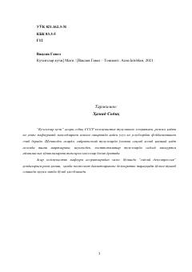

KKTotalitar tuzum va kuchsizlarning haqiqiy kuchi haqida qudratli siyosiy esse.
Vaclav Havelning 'Kuchsizlar kuchi' asari sobiq SSSR kommunistik tuzumining mohiyatini, mafkuraviy manipulyatsiya usullarini va posttotalitar jamiyatlarda o'zlikni saqlab qolish yo'llarini tahlil qiladi. Asar dissidentlik, nonkonformizm va siyosiy dekompressiya tushunchalarini chuqur o'rganib, totalitar rejimlar ostida haqiqiy hayot kechirish shartlarini ko'rsatadi. Postsovet davlatlarining demokratik taraqqiyot yo'liga o'tishida muhim manba sifatida baholanadi.